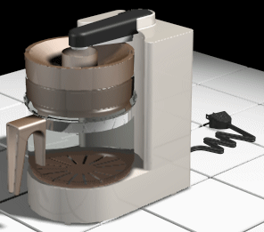

This tutorial demonstrates a typical workflow using Advanced Rendering, an extension of the Explode-Render-Animate application.
As you follow the step-by-step instructions, you will apply material properties to parts, add scenery and lighting, adjust properties to achieve varied visual effects, and render in photo realistic and artistic modes.
This is an intermediate tutorial. You might find it easier to follow if you first complete the Introduction to Part Modeling tutorial.
Estimated time to complete: 30 minutes
